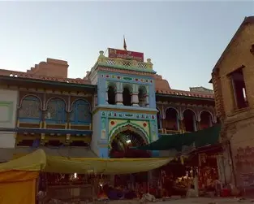

The sacred Shri Ambadevi Temple is located in Amravati, Maharashtra. The temple is dedicated to Goddess Ambadevi, an incarnation of divine feminine power known for her benevolence and protective qualities. The temple’s structure reflects traditional Hindu temple architecture and attracts visitors with its remarkable architectural design and spiritual atmosphere. The Navaratri Festival, celebrated before the Dasara festival, is observed with great enthusiasm and harmony. During these nine days, various cultural and religious programs are organized. A large fair (mela) is also held, attracting devotees and tourists from different places. Several hotels and accommodation facilities are available nearby for visitors and pilgrims.
Timings: 5:00 AM to 10:30 PM
